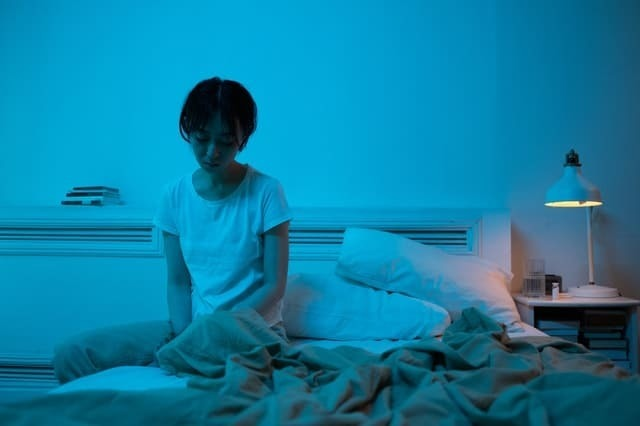

エイリアンハンド症候群の鍼灸
自分の意思に反して手足が勝手に動く神経障害。専門医での原因精査とリハビリを最優先に、安定期の心身ケアを支えます。
まず知っておきたい要点と改善の流れ
脳卒中や頭部外傷、脳腫瘍などによる前頭葉内側部・脳梁・前帯状皮質・後部頭頂葉の局所損傷や、神経変性疾患、てんかんの大脳半球分離手術後などに生じる神経障害です。左右の脳半球や運動制御ネットワークの連携が乱れることで、意思に反して手足が断続的に不随意運動を起こしたり、左右の手が互いに干渉する反対動作や自己衝突行動が現れます。運動協調性の低下に加え、強い心理的負担を伴う点も特徴です。（公式解説）
このようなお悩みはありませんか？
- ✓自分の意思とは無関係に手が物を掴んだり放したりする
- ✓片手の動作をもう一方の手が勝手に妨害してしまう
- ✓手が他人のものや異物のように感じられる
- ✓動作の制御困難による強い不安やストレスがある
当院の施術アプローチ・改善の流れ
なぜ鍼灸で改善へ向かうのか？（作用機序の図解）
エイリアンハンド症候群に対する鍼灸は、脳循環・三叉神経血管系と神経可塑性の調整機序を通じて、お体本来の回復力を引き出します。

百会・風池・合谷などの経穴刺激が三叉神経や大後頭神経・体性感覚路へ穏やかに作用します。
脳幹の自律神経中枢やセロトニン・GABA系のバランスを整え、神経の過敏発火を鎮めます。
後頭下筋群や首深部のこわばりを解き、頭部・内耳・顔面周囲の血流環境をサポートします。
神経回路の再学習（可塑性）と睡眠の質を高め、専門医の治療やリハビリの土台を支えます。
院長YouTube解説・関連動画
エイリアンハンド症候群の症状は手が他人の手に感じられる症状
エイリアンハンド症候群は、自分の意思で動かしているわけではないにも関わらず手足が断続的に不随意に動いてしまうことです。
自分の意思はなくても一方の手が勝手に動くため、本人は手が他人の手の様に感じられる症状であるとされています。
右手で物を取ろうとした時に左手で叩いてしまったり、他人と握手しようとした時に振り払ってしまったりすることが起こります。
エイリアンハンド症候群は、自分の手が自分の意志とは無関係に動いてしまう珍しい障害です。この症状は一方の手や時には足にも見られ、自分の手足が「異物」のように感じることがあります。以下は、エイリアンハンド症候群の主な症状です。
・自律動作
手が自分の意志に反して物を掴む、放す、操作するなどの動作を行う。
・反対動作
片方の手が意図した行動を行うと、もう一方の手がこれとは反対または妨害する行動を取る。
・自己衝突行動
両手がお互いに衝突するか、相反する動作を行う。
・知覚の違和感
自分の手が自分のものでないように感じる。自分の手足が異質な「他者」のように感じられることもあります。
・無目的な動作
意図しない時に手が動く、無意識のうちに衣服の着脱を始めるなど、目的を持たない動作が見られる。
・付随する可能性のある症状
運動障害：不随意動作に加えて、運動の協調性が失われることがあります。
認知障害：記憶障害や実行機能の障害など、脳の損傷に関連する他の認知障害が伴う場合があります。
感情的な影響：この症状はしばしばストレスや不安、恥ずかしさをもたらし、社会的な活動や日常生活に影響を与える可能性があります。
エイリアンハンド症候群の改善方法は、今のところ確立されていません。しかし、色々な改善方法やリハビリテーションに取り組み、症状をコントロールすることができている人もいます。
行われることのある改善方法は、バーバルキューリハビリテーションや視空間コーチング法、エイリアンハンドの注意をそらすこと、目標指向訓練など様々です。また、ボツリヌス毒素の注射やクロナゼパムを使った改善を行うこともあります。
エイリアンハンド症候群の改善方法は、症状の管理と生活の質の向上に焦点を当てたものです。この症状は根本的な原因によって引き起こされるため、改善方法はその原因に対処することから始まります。
かし、エイリアンハンド症候群に対する特定の改善方法は存在せず、アプローチは主に症状を軽減し、機能性を向上させることに集中しています。
・物理的な戦略
物理的な制約：不随意に動く手を制御するために、腕章やミトンを使用して手を固定する方法があります。
手の占有：エイリアンハンドが持つことができる小さな物体を提供することで、不随意な動きを有益な活動に変えることができます。
・行動戦略
意識的な監視と誘導：意識的に不随意に動く手を監視し、意図的な活動に取り組むように奨励します。
環境の調整：安全に活動できるように、生活環境を調整します。不随意な動きによって生じる危険を減らすための措置を講じます。
抗けいれん薬：不随意動作に関連する神経活動を減少させるために使用されることがあります。
抗うつ薬や抗不安薬：エイリアンハンド症候群が原因で生じるストレスや不安を管理するために用いられます。
・神経リハビリテーション
職業法：日常生活での自立を促進するための戦略やスキルを教えます。
物理法：運動能力を改善し、不随意動作に対処する方法を提供します。
・神経心理学的介入
認知行動法：不随意動作に対する認識や反応を管理するための戦略を提供します。
・外科手術
原因となる脳の障害に対して外科的介入が可能な場合は、その障害を取り除くことで症状が改善することがあります。
エイリアンハンド症候群に対するリハビリテーション方法は、不随意動作を管理し、日常生活の質を向上させることを目的としています。具体的なリハビリ方法は、以下のようなアプローチが含まれます。
・職業法
機能的な活動の練習：日常生活での具体的なタスクを実践することで、エイリアンハンドの影響を受ける手をより有効に利用する方法を学びます。例えば、食事の準備、着衣、書き込みなどの活動が含まれます。
適応戦略の教育：エイリアンハンドによる障害を最小限に抑えるための工夫や戦略を患者に教えます。これには、使用しない手をテーブルに置く、活動中に手を占めるような物を持つなどの方法があります。
・物理的方法法
筋力トレーニング：影響を受ける手や腕の筋力を向上させることで、不随意動作をより良くコントロールするためのトレーニングを行います。
協調運動訓練：両手の協調を改善するための特定のエクササイズを行います。これにより、日常生活での手の使い方の改善を目指します。
・感覚統合法
感覚フィードバックの使用：触覚や視覚フィードバックを利用して、影響を受けた手の感覚を再教育します。例えば、さまざまな質感を持つ物体を触ることで手の感覚を刺激するエクササイズがあります。
・行動修正
環境の修正：エイリアンハンドの動きによる危害を減らすために、家庭や職場の環境を調整します。鋭利な物や危険な物を手の届かない場所に置くなどの安全対策を含みます。
タスク指向の活動：エイリアンハンドを含めた身体の両側を使う活動に集中することで、手の不随意動作を意味のある活動に統合しようと試みます。
エイリアンハンド症候群の兆候がある場合は、他の病気との共通点があるため、症状に注意することが必要です。
エイリアンハンド症候群を発症している場合は、外傷性脳損傷などの脳局所損傷やパーキンソン病、アルツハイマー病、ハンチントン病などの脳変性に関わる病気と関係している可能性もあるのです。
エイリアンハンド症候群の判断を行う時には、体の動作の頻度と強度を評価することが必要になります。
突然バラバラに動いたり、人の財布を盗むつもりはなくても盗んでしまったりなどの症状がある場合はエイリアンハンド症候群である可能性が高いです。
エイリアンハンド症候群の改善方法は今のところ確立されていませんが、長い期間で見て望ましくない結果を減らすために早い段階で改善の可能性のある改善方法に取り組むことが大事です。


脳神経のお悩みのツボ図解とセルフケア
実際の施術ではお一人おひとりの体質・症状に合わせて選穴しますが、脳神経領域の補完ケア（片頭痛予防・脳卒中後リハ・パーキンソン病睡眠・顔面神経麻痺）の臨床でよく用いられる代表的なツボの目安です。

📌 代表的なツボの詳細一覧表を開く（6穴） ▼
| ツボ名 | 位置の目安 | 主な狙い | セルフケアの注意点 |
|---|---|---|---|
| 百会（ひゃくえ） | 両耳上端を結ぶ線と正中線の交点 | 頭部循環・脳卒中後ケア・パーキンソン病の睡眠緩和 | 高血圧発作時・頭部外傷直後は避ける |
| 風池（ふうち） | 後頭部の生え際、僧帽筋外側のくぼみ | 片頭痛予防・後頸部筋緊張緩和・頭部血流改善 | 頸部動脈に近いため強いグリグリ押し厳禁 |
| 合谷（ごうこく） | 手の甲、親指と人差し指の骨が交わる手前 | 頭顔面部の要穴。片頭痛・顔面神経麻痺の遠隔調整 | 妊娠中は強い刺激を避ける |
| 翳風（えいふう） | 耳たぶの後ろ、乳様突起と下顎骨の間のくぼみ | 顔面神経出口近傍の循環改善・ベル麻痺ケア | 神経・血管が集中するため強圧を避け温め中心に |
| 陽陵泉（ようりょうせん） | 膝外側、腓骨頭の前下方のくぼみ | 脳卒中後の痙縮・パーキンソン病の筋固縮ケア | 腓骨神経近接のためしびれが出る強圧は回避 |
| 太衝（たいしょう） | 足の甲、親指と人差し指の骨が交わる手前 | ストレス性片頭痛・のぼせ・緊張緩和 | 妊娠中は刺激を避ける |
国際査読論文の科学的エビデンス
国際的な医学データベース（PubMed・Cochrane等）で報告されている脳神経領域の補完ケア（片頭痛予防・脳卒中後リハ・パーキンソン病睡眠・顔面神経麻痺）領域の代表的な査読済み鍼灸研究をまとめています（標準治療との併用や研究上の限界を含めて正確に掲載）。
📚 査読論文データ・PubMed出典リンクを開く（4件） ▼
| 年・研究デザイン | 対象・規模 | 主な結果 | 限界・出典 |
|---|---|---|---|
| 2016年 Cochraneレビュー | 反復性片頭痛 22 RCTs（n=4,985） | 無治療比で頻度半減41% vs 17%（RR 2.40）、予防薬比3か月57% vs 46%（RR 1.24）かつ副作用脱落OR 0.27と優位。 | 1年以上の長期検証は不足。 Cochrane (PMID: 27351677) |
| 2016年 Cochraneレビュー | 脳卒中後リハ 31 RCTs（n=2,257） | 通常リハ併用でBarthel Index（MD 9.19）・Fugl-Meyer（MD 6.16）・嚥下・疼痛改善を示唆、重篤な有害事象なし。 | GRADE低〜非常に低。標準リハビリの補完として位置づけ。 Cochrane (PMID: 27562656) |
| 2024年 シャム対照RCT | パーキンソン病の睡眠障害 78名解析 | 抗PD薬併用下でPDSS睡眠尺度が4週時+19.75点・8週時+20.24点とシャム比有意改善（P<0.001）。 | 単施設・小規模・8週間追跡。標準薬併用が前提。 JAMA Netw Open (PMID: 38922617) |
| 2013年 多施設RCT | ベル麻痺（顔面神経麻痺）338名（ステロイド併用） | 6か月時の顔面神経機能回復は得気手技群が対照鍼群より優位（調整OR 4.16）、QOLも改善。 | 全例プレドニゾン併用。急性期の過剰顔面通電は回避配慮。 CMAJ (PMID: 23439629) |
参考文献・出典
- 銀座そうぜん鍼灸院「エイリアンハンド症候群の公式解説ページ」
- 2016年 Cochraneレビュー（反復性片頭痛 22 RCTs（n=4,985））— Cochrane (PMID: 27351677)
- 2016年 Cochraneレビュー（脳卒中後リハ 31 RCTs（n=2,257））— Cochrane (PMID: 27562656)
- 2024年 シャム対照RCT（パーキンソン病の睡眠障害 78名解析）— JAMA Netw Open (PMID: 38922617)
- 2013年 多施設RCT（ベル麻痺（顔面神経麻痺）338名（ステロイド併用））— CMAJ (PMID: 23439629)
よくある質問（FAQ）
Q. エイリアンハンド症候群は鍼灸だけで治せますか？▼
Q. 施術を受ける際に気をつけることはありますか？▼
あわせて読まれる関連疾患（脳神経のお悩み）
脈打つ強い痛みや光・音への過敏を伴う片頭痛に対し、首肩の深層筋と自律神経を整えて発作頻度と負担の軽減を目指します。
頭を動かした瞬間の回転性めまいに対し、首肩の緊張緩和と内耳循環・自律神経調整、寝返り運動で再発予防を支援します。
末梢性顔面神経麻痺に対し、早期の医療機関受診を最優先としたうえで、顔面の血流促進と後遺症予防を支援します。
不随意運動（舞踏運動）や精神・認知症状が緩やかに進む指定難病です。脳神経内科の管理を最優先に、安定期の緊張緩和を支えます。
脳卒中や頭部外傷後に起こる認知・行動の障害。発症時は即時救急と専門リハビリを最優先に、安定期の心身ケアを支えます。
頭部外傷なく突然新しい記憶が作れなくなり24時間以内に回復する症状。まず医療機関で脳卒中等を除外し、安定期の誘因ケアを支えます。
おひとりで悩まず、まずはご相談ください
銀座本院・川口・大宮・横浜・博多・田無の各院でご予約を承っております。